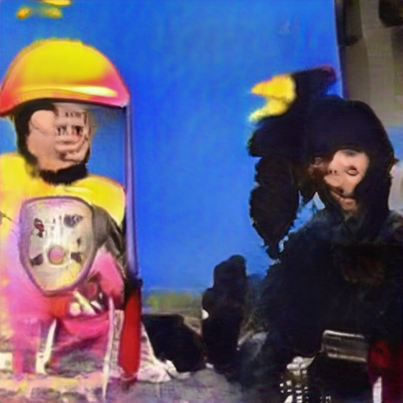

on NFL Wall Street Journal  until to about Social Media about Caused the Financial Crisis
from Consumers refuse to buy Social Media General Electric Harry Potter because becausewith because
about another Caused the Financial Crisis from NFL because from and